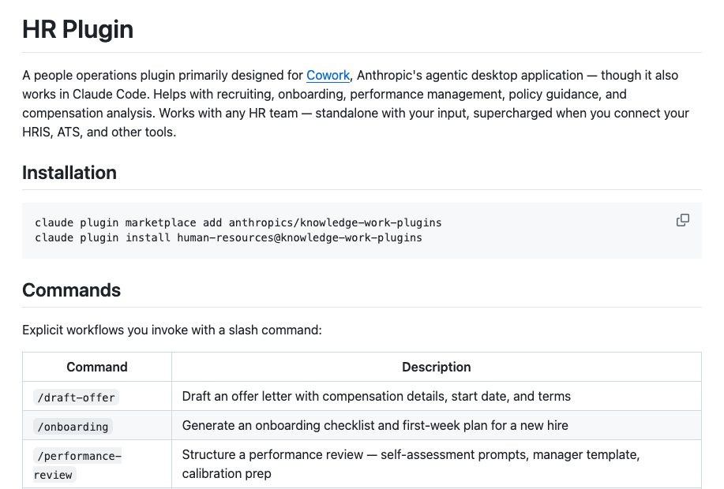

Người làm nhân sự phải lo tuyển người, đón người mới, đánh giá, trả lời câu hỏi chính sách và đọc số liệu nhân sự. Nhóm kỹ năng human-resources của Anthropic gom các việc đó lại, để Claude soạn phần chữ và phần bảng, còn người làm nhân sự quyết định.
Plugin human-resources có 9 kỹ năng, chúng mình đếm từ thư mục skills của kho gốc. README của plugin cho biết plugin dùng được ngay khi các bạn tự cung cấp thông tin, và chạy tốt hơn khi nối với hệ thống nhân sự, hệ thống tuyển dụng và các công cụ khác.

Cài đặt
Cách 1: Claude Cowork
- NGƯỜI: vào claude.com/plugins và cài plugin
human-resources. README gốc hướng dẫn cài plugin cho Cowork ở trang này. README của plugin cho biết plugin được thiết kế chủ yếu cho Cowork.
Cách 2: Claude Code
- NGƯỜI: mở terminal, chạy hai lệnh sau, chép đúng từ README của kho gốc. Lệnh đầu thêm kho plugin của Anthropic, lệnh thứ hai cài nhóm nhân sự.
claude plugin marketplace add anthropics/knowledge-work-plugins claude plugin install human-resources@knowledge-work-plugins
- TỰ ĐỘNG: sau khi cài, plugin tự kích hoạt. README gốc ghi: kỹ năng tự chạy khi đúng việc, và lệnh gõ tắt dùng được ngay trong phiên làm việc.
- NGƯỜI: kiểm đã cài chưa. Gõ
/plugin, mở thẻ Installed và tìmhuman-resources. Theo Docs, các bạn cũng có thể gõ/rồi tìm kỹ năng của plugin dưới dạng/human-resources:<tên-kỹ-năng>. - NGƯỜI (không bắt buộc): tạo file
settings.local.jsonđể Claude biết thông tin công ty: tên công ty, trụ sở, số nhân viên, phúc lợi (bảo hiểm, nghỉ phép, nghỉ thai sản), loại tiền lương và cách vest cổ phần. Trên Cowork, lưu file vào một thư mục đã chia sẻ với Cowork, plugin tự tìm thấy. Trên Claude Code, lưu tạihuman-resources/.claude/settings.local.json. README ghi nếu chưa có file này, plugin sẽ hỏi các bạn từng thông tin khi cần.
Muốn tắt hoặc gỡ plugin, chạy một trong hai lệnh sau:
claude plugin disable human-resources@knowledge-work-plugins claude plugin uninstall human-resources@knowledge-work-plugins
Nối công cụ (không bắt buộc): README ghi mọi kỹ năng đều chạy được khi không nối gì, các bạn chỉ cần dán thông tin hoặc tải dữ liệu lên. Nối công cụ thì Claude tự lấy dữ liệu thay các bạn. CONNECTORS.md của nhóm liệt kê các loại sau.
- Hệ thống tuyển dụng (ATS): Greenhouse, Lever, Ashby, Workable.
- Lịch: Google Calendar, hoặc Microsoft 365.
- Chat: Slack, hoặc Microsoft Teams.
- Email: Gmail, hoặc Microsoft 365.
- Hệ thống nhân sự (HRIS): Workday, BambooHR, Rippling, Gusto.
- Kho kiến thức: Notion, Atlassian (Confluence), hoặc Guru, Coda.
- Dữ liệu lương thị trường: Pave, Radford, Levels.fyi.
Cách gọi kỹ năng
Có hai cách, theo README gốc và Docs của Claude Code.
- Nói việc bằng lời thường. Các bạn cứ kể việc cần làm, kỹ năng tự chạy khi đúng việc. Ví dụ README đưa ra: hỏi "chính sách nghỉ thai sản của công ty là gì", kỹ năng tra chính sách tự chạy và tìm trong kho kiến thức đã nối.
- Gọi thẳng bằng lệnh gõ tắt
/human-resources:<tên-kỹ-năng>. Theo Docs, kỹ năng của plugin luôn có tên dạng/tên-plugin:tên-kỹ-năng.
Ví dụ cụ thể cho nghề nhân sự:
/human-resources:draft-offer: soạn thư mời nhận việc. Nói kèm vị trí, cấp bậc, nơi làm việc và các khoản trong gói đãi ngộ./human-resources:onboarding: lập danh sách việc đón người mới. Nói kèm tên, vị trí, nhóm và ngày bắt đầu./human-resources:performance-review: dựng khung đánh giá hiệu suất cho kỳ đánh giá sắp tới.
Một số kỹ năng trong SKILL.md có gợi ý nội dung đi kèm sau lệnh (trường argument-hint): draft-offer gợi ý vị trí và cấp bậc, onboarding gợi ý tên và vị trí người mới, performance-review gợi ý tên nhân viên hoặc kỳ đánh giá, policy-lookup gợi ý chủ đề chính sách, comp-analysis gợi ý vị trí, cấp bậc hoặc bộ dữ liệu, people-report gợi ý loại báo cáo. Nếu không ghi gì sau lệnh, các bạn cứ mô tả việc bằng lời ở câu tiếp theo.
Các kỹ năng trong nhóm
/human-resources:comp-analysis: phân tích lương thưởng, gồm so với thị trường, xếp vào khung lương và mô hình hóa cổ phần. Dùng khi hỏi nên trả bao nhiêu cho một vị trí, hoặc tải dữ liệu lương lên để tìm trường hợp lệch và nguy cơ mất người. Câu gọi mẫu: "Vị trí kỹ sư phần mềm cấp trung nên trả trong khoảng nào, đây là bảng lương hiện tại của nhóm."/human-resources:draft-offer: soạn thư mời nhận việc kèm gói đãi ngộ (lương, cổ phần, thưởng ký hợp đồng) và gợi ý đàm phán cho quản lý tuyển dụng. Câu gọi mẫu: "Soạn thư mời cho ứng viên vị trí chuyên viên marketing, làm tại Hà Nội, bắt đầu ngày 1 tháng sau."/human-resources:interview-prep: lập kế hoạch phỏng vấn có cấu trúc, với câu hỏi theo năng lực và bảng chấm điểm. Câu gọi mẫu: "Lập kế hoạch phỏng vấn cho vị trí trưởng nhóm bán hàng, kèm bảng chấm điểm."/human-resources:onboarding: tạo danh sách việc đón người mới và kế hoạch tuần đầu, gồm việc trước ngày đi làm (tài khoản, thiết bị, người kèm cặp), lịch ngày đầu, tuần đầu và mục tiêu 30/60/90 ngày. Câu gọi mẫu: "Lập kế hoạch đón nhân viên kế toán mới, bắt đầu thứ Hai tuần sau."/human-resources:org-planning: lập kế hoạch nhân sự, thiết kế tổ chức và tối ưu cơ cấu nhóm. Dùng khi cân nhắc quy mô nhóm, tuyến báo cáo hoặc nên tuyển ai tiếp theo. Câu gọi mẫu: "Bộ phận vận hành đang có 12 người, nên tuyển thêm vị trí nào trước?"/human-resources:people-report: tạo báo cáo nhân sự về quy mô, tỷ lệ nghỉ việc, đa dạng và sức khỏe tổ chức. Câu gọi mẫu: "Làm báo cáo tỷ lệ nghỉ việc theo phòng ban từ file này."/human-resources:performance-review: dựng khung đánh giá hiệu suất, gồm mẫu tự đánh giá, mẫu của quản lý và chuẩn bị họp hiệu chỉnh, đồng thời biến nhận xét chung chung thành ví dụ hành vi cụ thể. Câu gọi mẫu: "Soạn mẫu tự đánh giá và mẫu nhận xét của quản lý cho kỳ đánh giá cuối năm."/human-resources:policy-lookup: tìm và giải thích chính sách công ty bằng lời dễ hiểu (nghỉ phép, phúc lợi, đi công tác, chi phí). Tìm trong kho kiến thức đã nối, hoặc dùng nội dung sổ tay các bạn dán vào. Câu gọi mẫu: "Công ty mình quy định thế nào về làm việc từ xa ở tỉnh khác?"/human-resources:recruiting-pipeline: theo dõi và quản lý các giai đoạn tuyển dụng, từ tìm nguồn đến khi ứng viên nhận việc. Câu gọi mẫu: "Cập nhật giúp mình tình hình tuyển dụng: đang có bao nhiêu ứng viên ở từng vòng?"
Lưu ý khi dùng ở Việt Nam
- Nhận xét của chúng mình: các hệ thống trong CONNECTORS.md (Workday, Greenhouse, Pave...) chủ yếu là sản phẩm nước ngoài. Nhiều đội nhân sự ở Việt Nam đang quản lý bằng file bảng tính hoặc phần mềm trong nước. Với trường hợp này, các bạn dùng cách chạy độc lập mà README mô tả: tải file lên hoặc dán nội dung vào.
- Nhận xét của chúng mình: các mẫu thư mời, danh sách đón người mới và khung đánh giá do Claude soạn dựa trên thông lệ chung. Các bạn cần đối chiếu với hợp đồng lao động, nội quy lao động và quy định pháp luật lao động hiện hành ở Việt Nam trước khi dùng.
- Nhận xét của chúng mình:
comp-analysiscần dữ liệu lương thị trường. Nếu các bạn không có nguồn như Pave hay Radford, hãy tải lên khảo sát lương của nhà tuyển dụng hoặc bảng lương nội bộ đã ẩn danh, rồi nói rõ nguồn và năm của số liệu. - Nhận xét của chúng mình: dữ liệu nhân sự và lương là thông tin nhạy cảm. Trước khi tải file lên hoặc nối hệ thống, các bạn nên hỏi bộ phận công nghệ thông tin và pháp chế của công ty xem việc đó có được phép không.
Chúng mình chưa cài thử nhóm này; lệnh và tên kỹ năng lấy từ kho gốc của Anthropic.
Xem các nghề khác: Kỹ năng AI theo từng nghề.
Các bạn muốn có bộ kỹ năng riêng cho nghề của mình?
Follow chúng mình trên Threads và inbox, hoặc để lại số Zalo, chúng mình nhắn lại tư vấn.
Cập nhật 03/11/2026.